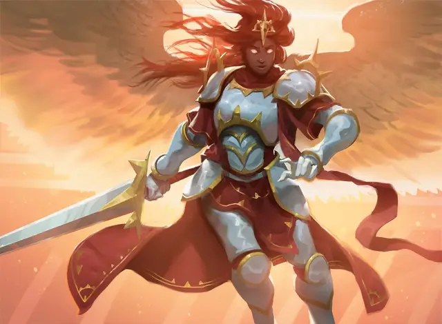

Боевой ангел
Battleforce Angel
Средний Небожитель, законно-добрый

Класс Доспеха 18 (латы)
Хиты 66 (12к8 + 12)
Скорость 30 футов, летая 90 футов
| мод | спас | ||
|---|---|---|---|
| СИЛ | 16 | +3 | +3 |
| ЛОВ | 12 | +1 | +1 |
| ТЕЛ | 13 | +1 | +1 |
| мод | спас | ||
|---|---|---|---|
| ИНТ | 11 | +0 | +0 |
| МДР | 17 | +3 | +6 |
| ХАР | 18 | +4 | +7 |
Навыки Восприятие +6, Расследование +3
Сопротивление урону излучение, огонь
Иммунитет к состояниям очарование, испуг, истощение
Чувства истинное зрение 120 футов, тёмное зрение 120 футов, пассивное Восприятие 16
Языки Все
Опасность 5 (1800 опыта)
Бонус мастерства +3
Особенности
Облёт. Боевой ангел не провоцирует атаки, когда вылетает из досягаемости врага.
Сопротивление магии. Боевой ангел совершает с преимуществом спасброски от заклинаний и прочих магических эффектов.
Действия
Мультиатака. Ангел совершает две рукопашные атаки. Также он использует Боевое вдохновение
Длинный меч. Рукопашная атака оружием: +6 к попаданию, досягаемость 5 футов, одна цель. Попадание: Рубящий урон 7 (1к8 + 3) или рубящий урон 8 (1к10 + 3) если используется двумя руками плюс урон излучением 18 (4к8). Если цель в пределах 5 футов от союзника ангела, она получает дополнительно 2 (1к4) урона излучением.
Боевое вдохновение. Ангел выбирает до 3-х существ, которых может видеть в пределах 30 футов. До конца следующего хода ангела каждое существо добавляет 1к4 к броскам атаки и спасброскам.
Описание
Боевые ангелы - носители яркого огня, парящие в бою, купающиеся в свете рвения Боросов. Они ведут роты смертных воинов сверху или летят перед оседлавшими Рухов небесными рыцарями. Они не стесняются крови, боли и смятения в бою, а погружаются в сменяющие друг друга приливы и отливы боя. Только вступив в бой, они могут выполнить свои обязанности по выполнению приказов военачальников, приспосабливая свою тактику к меняющейся ситуации на земле.
Ангелы Бороса
Ангелы Легиона Бороса считают себя воплощением того, что задумал их создатель. Они свирепые воины, преданные справедливости и посвятившие себя защите слабых от зла и угнетения. Они командиры, советники, стратеги и солдаты. Их присутствие в бою вдохновляет смертных солдат легиона праведным рвением. Большинство солдат Бороса считают, что ангелы являются образцами добра, мудрости и милосердия. Реальность такова, что ангелы не защищены от соблазнов коррупции, и необходимость политических махинаций может скомпрометировать лучших из них.
Военачальники. Самые мудрые, самые дальновидные ангелы отвечают за формирование и реализацию военной стратегии Легиона Бороса. Поскольку они бессмертны, их планы могут охватывать столетия, и они, как известно, принимают десятилетия потерь как разумную цену за более значительную победу много лет спустя. Эти военачальники используют характеристики планетара или солара (как представлено в Бестиарии), но их внешний вид похож на других ангелов Бороса.